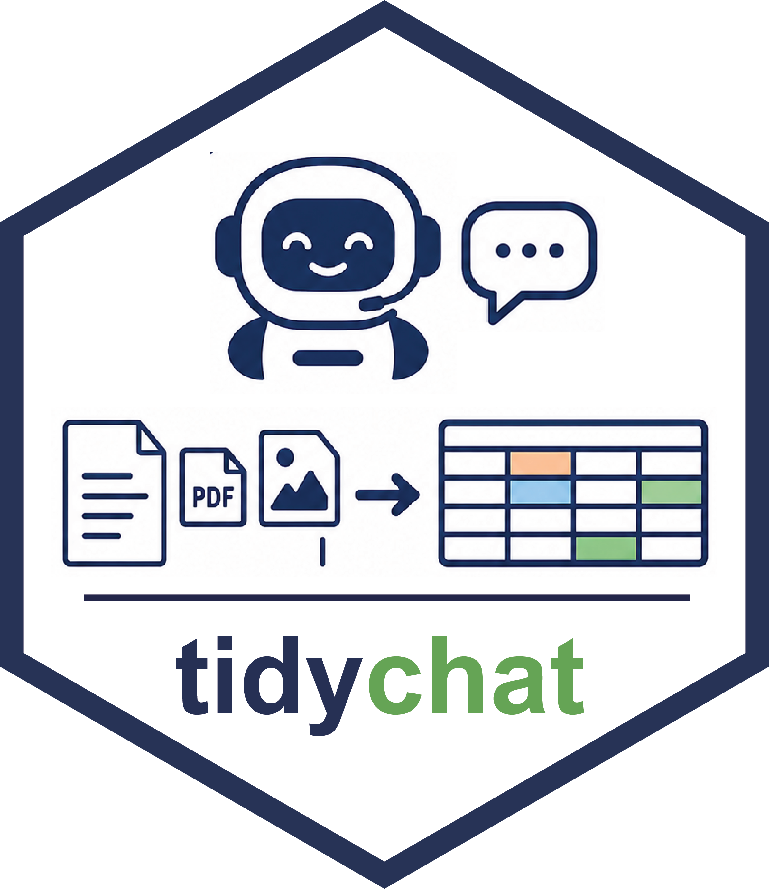

tidychat: Tidy LLM Workflows for Text Annotation and Structured Extraction

tidychat is an R package designed for interactive LLM-powered annotation and structured data extraction. It provides a unified interface for working with multiple LLM providers including Ollama, Gemini, OpenAI, Anthropic, Groq, DeepSeek, and Azure OpenAI.
Why use tidychat for LLM Workflows?
- Structured Data Extraction: Extract categorized, numeric, or text-based fields from unstructured text, PDFs, images or others into a tidy data frame output.
- Batch Annotation: Annotate large text collections with flexible field definitions and progress tracking.
- Automatic Metadata Tracking: Every response automatically includes query timestamp, model name, provider, temperature, max_tokens, and exact prompt text in a tidy data frame output.
-
Multiple Draws & Uncertainty Quantification: Take multiple independent responses per item and quantify agreement, entropy, and uncertainty with
summarise_draws(). - Reproducible Workflows: Define extraction schemas once and apply them consistently across datasets.
Documentation & Examples
For detailed guides on annotation workflows and provider configuration, visit the official documentation: 👉 tidychat Documentation Website